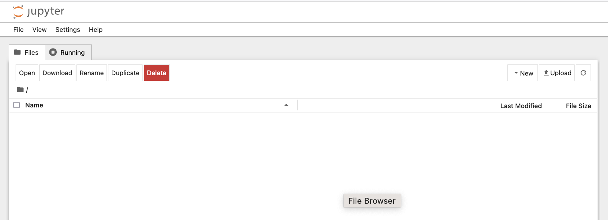
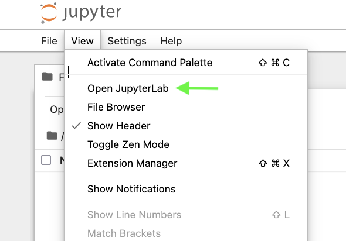
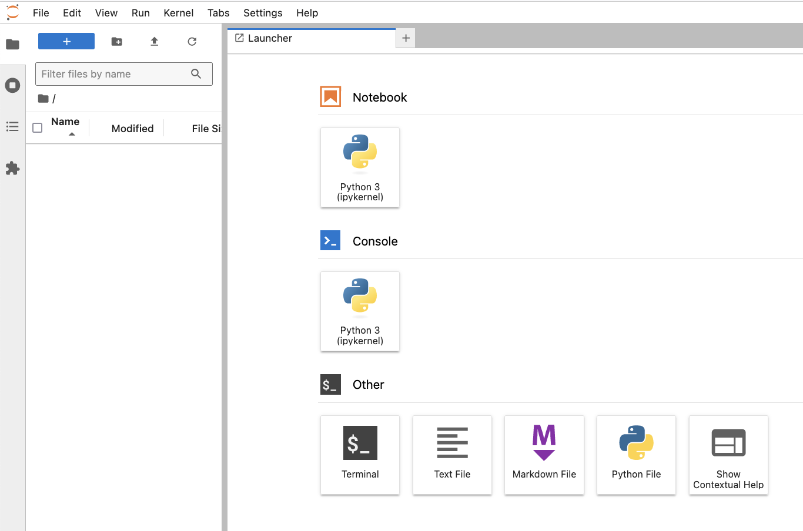
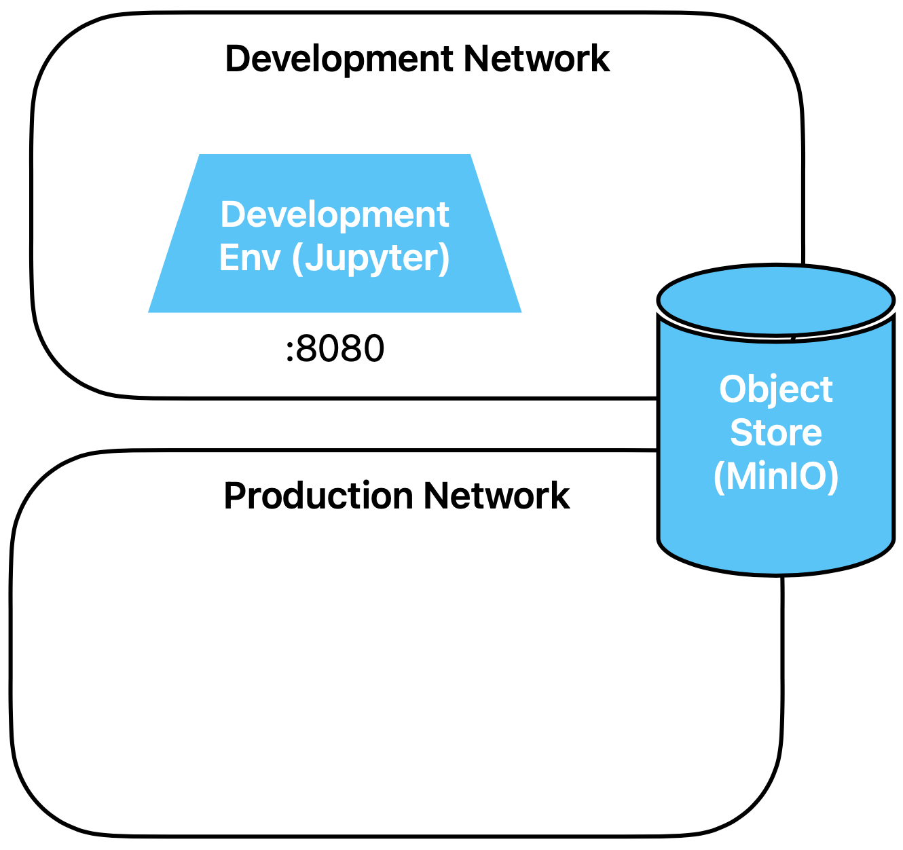

Aufbau der Übungen
Die Übungen liegen als html Files vor.
Einige Übungen kommen als einfache Fragen daher. Für die meisten Übungen muss aber
beispielsweise ein Docker Container konfiguriert oder Code geschrieben werden. Die Antwort kann
jeweils direkt mit der Musterlösung verglichen werden.
Übung 1: Basis-Infrastruktur
Zu Beginn des Workshops sieht die Infrastruktur wie in folgendem Diagramm gezeigt aus.
Service Definition
Wir beginnen demnach mit zwei getrennten Docker-Netzwerken und zwei Containern:
- Dem Object Store
- Der Entwicklungsumgebung in Form eines JupyterLab Servers
Schau dir unter den Pfaden
- exercises/
- exercises/containers/development_env/
- exercises/containers/objectstore/
die Dockerfiles und docker-compose.yml Files der development environment und
des Object Store an,
um den Einstieg in die Workshop-Infrastruktur zu finden. Die weiteren Dockerfiles und compose
Files kannst du vorerst ignorieren. Wie ist die Hierarchie der Docker Files aufgebaut?
Lösungsvorschlag
Im top-level compose file docker-compose.yml werden via Include die zwei
Netzwerke definiert. Danach werden die compose Files der einzelnen Services gelistet.
Die Services sind dann im Unterordner containers/ definiert. Jeder Service hat
seinen eigenen Ordner. Einige Services benötigen nur ein docker-compose.yml,
andere benötigen zusätlich noch ein Dockerfile.
Achtung: Einige Dienste sind noch auskommentiert. Sie werden noch nicht benötigt, wir
werden sie später schrittweise aktivieren.
Starte nun alle container. Dies dauert beim ersten mal einen Moment, da die Images geladen
werden müssen.
Lösungsvorschlag
Dazu führt du im Verzeichnis /exercises, wo sich das top-level compose file
docker-compose.yml befindet, den Befehl
docker compose up
aus. Der Prozess bleibt so im Vordergrund und du kanst das Terminal Window offen lassen.
Später kannst du den Prozess mit ctrl-c einfach stoppen.
Du kannst aber auch docker compose up -d ausführen, um den Prozess in den
Hintergrund zu schicken.
Docker-Netzwerke
Wir simulieren eine Trennung von Entwicklungs-Umgebung und produktiver Umgebung, indem wir zwei
Docker-Netzwerke definieren und jeden Container entweder dem einem oder dem anderen der beiden
Netzwerke zuordnen. Nur Dienste, welche produktiv laufen, und auch aus der Entwicklungsumgebung
erreichbar sein müssen, werden beiden Netzwerken zugeordnet.
Nenne einige solche Dienste, welche typischerweise sowohl dem Development- wie auch dem
Production Netzwerk zugeordnet sein sollten.
Lösungsvorschlag
Einige mögliche Dienste, die aus beiden Netzwerken zugreifbar sein müssen, sind
- Object Store
- Gitlab
- Docker Registry
- Model Registry
Object Store
Wir verwenden für die Datenablage einen Object Store. Ein Object Store speichert Daten als
eigenständige Objekte, die jeweils eine eindeutige ID, Metadaten und die eigentlichen Daten
enthalten. Diese Objekte sind nicht in einer hierarchischen Struktur wie bei Dateisystemen
organisiert, was eine hohe Skalierbarkeit und einfachen Zugriff auf grosse Datenmengen
ermöglicht.
Im Gegensatz dazu verwendet ein Block-Speicher Datenblöcke, die in feste Grössen aufgeteilt sind
und in einer festen Struktur auf der Festplatte gespeichert werden. Block-Speicher ist ideal für
Anwendungen, die direkten, schnellen Zugriff auf Daten benötigen, wie Datenbanken oder
Betriebssysteme. Der wesentliche Unterschied liegt also darin, dass Objektspeicher für
unstrukturierte Daten und grosse, skalierbare Speicherung ausgelegt ist, während Block-Speicher
für strukturierte Daten und schnelle Lese-/Schreibvorgänge optimiert ist. Amazon S3 ist das
klassische Beispiel eines Object Stores. Wir setzen hier einen lokalen Object Store auf, der ein
S3-kompatibles API bietet.
Wir verwenden ihn für die Speicherung von
Trainingsdaten, Artefakte aus dem Trainingsprozess, Features und Predictions. Dazu verwenden wir
das Produkt
MinIO, welches uns erlaubt, einen lokal laufenden
Object Store mit minimaler Konfiguration aufzusetzen.
Schau dir das Docker Compose File des Object Stores an. Welches lokale Verzeichnis wird für die
Ablage der Object Store Daten verwendet?
Lösungsvorschlag
Im docker-compose File von minio (containers/objectstore/docker-compose.yml)
kannst du den volume
mount finden:
volumes:
- ../s3_data:/data
Daran siehst du, dass die Daten ausserhalb des Containers im lokalen Verzeichnis
s3_data abgelegt sind. Innerhalb des Containers liegen die Daten im Verzeichnis
/data. In der command direktive sieht man, dass dem minio daemon das
Verzeichnis /data beim Start als Argument angegeben wird:
command: server --address "0.0.0.0:9000" /data
Development Environment
Wir simulieren die Entwicklungsumgebung, in welcher Data Scientists Analysen durchführen und
Modelle entwickeln, mit einem einzelnen Container, welcher eine Jupyter Umgebung zur Verfügung
stellt. Im Rahmen des Workshops reicht dies vollkommen aus. In der Realität wäre eine
Entwicklungsumgebung natürlich etwas komplexer, mindestens eine IDE und GPUs müssten neben einer
Jupyter-Umgebung auch noch zur Verfügung stehen.
Schau dir das docker-compose File der Entwicklungsumgebung an, um die URL und den Port zu
finden, über den du auf Jupyterlab zugreifst.
Lösungsvorschlag
Im File development_env/docker-compose.yml findest du den Abschnitt
ports:
- 127.0.0.1:8080:8888
Der Port, unter welchem Jupyterlab im Container läuft, ist 8888. Er wird auf den Port
8080 ausserhalb des Containers gemappt. Du kannst also via den Port 8080 mit dem Browser
auf die Entwicklungsumgebung zugreifen.
Greife via Browser auf die Entwicklungsumgebung zu. Du kannst direkt einloggen, ohne ein Token
oder andere Credentials angeben zu müssen. Das wurde aus Bequemlichkeitsgründen für den Workshop
so konfiguriert. In einer richtigen Installation sollte natürlich eine Autorisierung und
Authentifizierung aktiviert werden.
Versuche herauszufinden, wie bzw. wo die Autorisierung für Jupyter deaktiviert wurde.
Lösungsvorschlag
Du findest die Konfiguration direkt im Dockerfile:
# generate a config directory and the default config
RUN jupyter notebook --generate-config
# configure jupyter for easy access (don't do this in production!!!)
RUN echo "c.NotebookApp.open_browser = False" >>
/root/.jupyter/jupyter_notebook_config.py && \
echo "c.JupyterApp.answer_yes = True" >> /root/.jupyter/jupyter_notebook_config.py
&& \
echo "c.NotebookApp.ip = '*'" >> /root/.jupyter/jupyter_notebook_config.py && \
echo "c.NotebookApp.allow_origin = '*'" >> /root/.jupyter/jupyter_notebook_config.py
&& \
echo "c.NotebookApp.token = ''" >> /root/.jupyter/jupyter_notebook_config.py && \
echo "c.NotebookApp.password = ''" >> /root/.jupyter/jupyter_notebook_config.py
Greife nun mit deinem Browser auf die Entwicklungsumgebung zu. Du solltest folgendes sehen:

Du kannst auch ein Jupyterlab öffnen, wenn du das lieber verwendest:


Verwende nun die Entwicklungsumgebung, um ein neues Jupyter Notebook zu erstellen. Nenne es
`hello_world.ipynb` und lasse es ein Hello World ausgeben.
Lösungsvorschlag
Das kriegst du auch ohne Musterlösung hin ;-)
Lesen und Schreiben aus dem Object Store
Wir verwenden
s3fs, um Files in den Object Store zu schreiben und aus ihm zu lesen. Du
findest die Dokumentation
hier.
Öffne nun ein neues Notebook in der Development Environment (oder recycle das vorherige
helloworld Notebook), um ein wenig Übung im Umgang mit dem Object Store zu bekommen:
- Erstelle einen bucket
- Schreibe ein Textfile in diesen bucket
- Zeige den Inhalt des Buckets an
- Probiere einige weitere Befehle des APIs aus
Lösungsvorschlag
Hier ist ein Codebeispiel.
import s3fs
# create a reference to the object store
s3 = s3fs.S3FileSystem()
# create a bucket
s3.mkdir("mybucket")
# write a file. According to the documentation, only binary mode works, although writing a string directly seems to work as well
with s3.open('mybucket/hello.txt', 'wb') as f:
f.write(r'Hello World'.encode('utf-8'))
# some more commands
s3.ls('mybucket')
s3.du('mybucket/hello.txt')
Kannst du erklären, wie die Autorisierung und die Verbindung zum Object Store funktioniert? Wie
werden URL und credentials übergeben?
Lösungsvorschlag
Im docker-compose File der Entwicklungsumgebung siehst du, dass die folgenden
Umgebungsvariablen gesetzt werden:
environment:
- FSSPEC_S3_KEY=${MINIO_ADMIN}
- FSSPEC_S3_SECRET=${MINIO_SECRET}
- FSSPEC_S3_ENDPOINT_URL=${MINIO_ENDPOINT}
Durchsucht man die s3fs Dokumentation nach der ersten dieser drei Variablen, findet
man, dass diese Variablen, wenn vorhanden, beim Erstellen des s3 Objectes mit
s3fs.S3FileSystem() verwendet werden, um die Credentials und den Endpoint zu
setzen. Deshalb musstest du bei der obigen Übung diese Infos nicht explizit angeben.
Wenn du nun das docker-compose File des Object Stores anschaust, siehst du, dass dem
Server beim Start gesagt wird, er solle auf Port 9000 hören und via Umgebungsvariablen
Username und Passwort des root Users mitgeteilt werden. Wir verwenden hier der
Einfachheit halber für alles diesen User, was in der Praxis natürlich nicht gemacht
wird.
command: server --address "0.0.0.0:9000" /data
hostname: objectstore
expose:
- "9000"
environment:
- MINIO_ROOT_USER=${MINIO_ADMIN}
- MINIO_ROOT_PASSWORD=${MINIO_SECRET}
Und wo werden Usernamen, Secret und Endpoint effektiv gesetzt?
Lösungsvorschlag
Die effektiven Werte für Passwort und Endpoint werden in einem .env File gesetzt:
$ cat .env
MINIO_ADMIN=xxx
MINIO_SECRET=xxx
MINIO_ENDPOINT=http://objectstore:9000
Docker-compose verwendet
dieses .env File, um die Platzhalter entsprechend zu befüllen.
Zusammenfassung
Wir starten also mit der folgenden Infrastruktur:

Die Umsetzung der Übungen erfolgt in Containern, welche den Docker Netzwerken
Development oder Production zugeordnet sind.
Bisher haben wir den Object Store, welcher aus beiden Netzwerken verwendbar ist und die
Entwicklungsumgebung, die nur auf das Entwicklungsnetzwerk Zugriff hat.
Im Laufe des Workshops werden weitere Dienste hinzukommen.
Du kannst nun gleich mit der nächsten Übung weiterfahren:
07_Ein_einfaches_Modell